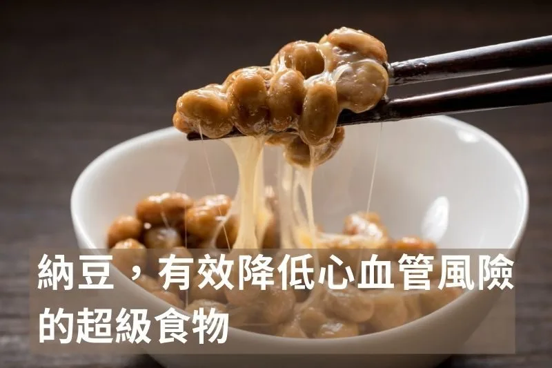

納豆，有效降低心血管風險的超級食物

納豆是我認為大豆製品中最好的一種形式，但是傳統營養學經常出現一種謬誤：認為無論是豆漿、豆腐、黃豆還是納豆，所有大豆食品都是一樣的，可以視為同質的營養來源。然而，我認為這種一視同仁的看法是錯誤的過度簡化。我們今天從文獻的角度一起看看納豆對心血管疾病的好處。
2017年發表於《American Journal of Clinical Nutrition》的日本高山研究（Takayama study）提供了有力證據：只有特定的發酵大豆食品（也就是納豆），與心血管疾病死亡風險降低有關，其他形式的大豆攝取則看不出這種保護效果 。高山研究追蹤了約2.9萬名日本成年人的飲食和健康狀況長達16年，結果發現：那些經常食用納豆的人，心血管疾病（CVD）相關的死亡風險明顯低於不吃納豆的人。具體而言，納豆攝取量最高的族群相比幾乎不吃納豆者，總體心血管疾病死亡風險降低約25% 。在中風方面效果更加突出：納豆攝取最多組的中風死亡率顯著低於最低組，特別是缺血性中風的死亡風險降低約三分之一 。相反的，研究中評估的其他大豆食品（例如豆腐、味噌、豆漿等）並未展示出類似的保護作用：無論是總的大豆蛋白攝取量，還是總的異黃酮攝取量，都與CVD死亡風險沒有顯著關聯 。也就是說，單純多吃非發酵的大豆食品（未經發酵處理的傳統黃豆製品）並未觀察到心血管死亡風險的下降。
為什麼會出現如此巨大的差異？關鍵在於納豆並非普通的大豆食品。納豆在營養構成和生物活性上與一般黃豆製品大不相同。納豆是經過發酵的產物，而發酵過程賦予了納豆一些獨特的成分與功能，使其對心血管系統產生額外影響。簡而言之，納豆之所以明顯降低中風與心血管死亡，說明它含有其他大豆食品所沒有的特殊有益因子。
納豆的護心祕密，來自其發酵產生的生物活性物質，而非黃豆本身常規的蛋白或異黃酮。最引人注目的一種成分是納豆激酶（nattokinase）。納豆是在發酵過程中加入枯草桿菌（Bacillus subtilis var. natto）製成的，這種細菌在發酵時產生大量納豆激酶 。納豆激酶是一種強力的纖維蛋白溶解酶，能夠直接溶解血栓和纖維蛋白 。實驗室研究顯示，其溶栓活性比人體自身的血栓溶解酶強四倍 。由於血管內血栓形成是導致中風和心肌梗塞等CVD事件的重要原因 ，納豆激酶的強力溶栓作用為納豆的心血管保護效應提供了合理的機制解釋。
有臨床試驗發現，口服納豆激酶補充劑可增強體內纖維蛋白溶解和抗凝的標記物，並有降低血壓的作用 。這意味著納豆激酶不僅在試管中有效，在人體內也能產生有益的改變，這是一般黃豆蛋白或異黃酮難以達到的功能。
因此，可以推測，納豆顯著降低中風及CVD死亡率的背後，很可能正是因為這類特殊酵素的作用。納豆中由菌種發酵產生的納豆激酶可以抑制血栓形成，進而有助於降低心血管疾病死亡風險 。換言之，納豆的健康價值超出了傳統營養學對蛋白質、脂肪、異黃酮的認知範疇，而體現在它所攜帶的納豆激酶上。
納豆並非獨一無二的例子。在其他文化中也存在類似的發酵黃豆食品，產生接近或更強效酵素。例如韓國的清曲醬、印尼的天貝等傳統發酵黃豆製品，就被報告含有與納豆激酶相似甚至更強的抗血栓酶活性，它們在防治血栓方面的潛力同樣值得關注 。這進一步說明，真正關鍵的是發酵所帶來的功能酵素與代謝產物，而不單單是黃豆本身的營養。
納豆的例子凸顯了代謝酵素功能的重要性。一種食物如果富含能改變生理指標的酵素（如納豆激酶這樣直接作用於血栓代謝的酶），它對健康風險的影響就可能呈現出類藥物的效果 。這提醒我們，評估食物價值時不能只看傳統營養成分表上的蛋白質、脂肪、維生素。有些食物本身就是天然的功能性食品，裡面蘊含的酵素或活性物質會直接作用於人體代謝路徑。
營養來源的多樣性及其加工形式，決定了食物所提供的生理影響範圍。這種同一原料不同加工形式所導致的組成差異，正是我們需要重視的「多型性」營養來源：每種形式都是一種不同的“營養多態”，其健康作用不能一概而論。發酵食品本身往往攜帶益生菌或代謝產物，可以直接調節腸道菌相。
在臨床營養決策時，我們應避免頭痛醫頭、腳痛醫腳式的線性思維，而要有系統地考量食物的功能屬性。高山研究這篇文獻的重點是：單純提高某種食物的總攝取量，若不考慮食物形式與功能，未必能帶來預期的風險改善。我們真正應該引導患者和大眾去重新思考日常飲食中“功能型發酵食物”的角色，例如納豆、天貝、傳統酸菜、發酵乳製品等，這些食物提供的不只是營養，還有活性的酵素和有益微生物，對健康的影響可能遠超其表面營養價值 。
 空腹小雞跟思思醫師一起斷食，順便養一隻小雞來養小雞 →
空腹小雞跟思思醫師一起斷食，順便養一隻小雞來養小雞 →
好朋友早餐信
一週一封：《健康駭客週報》這集的研究重點，加上家醫專欄這週的新文章。免費，隨時可以退訂。
延伸閱讀

飯後的血液指標，有時候比飯前更重要
飯後血液指標反映胰島素反應與代謝控制的實際狀況，往往比飯前數值更能說明真實身體狀態。
運動過量會導致心血管內的斑塊增加，但不是你想的那樣
運動過量可能增加冠狀動脈斑塊的形成，但運動對心血管長期保護益處仍然明確，適度最為重要。

魚斷食，他得到的超能力
Norwitz 吃一個月沙丁魚後變得耐冷，文中整理 2026 年 Cell 研究：EPA 轉成 12-HEPE，經 Olfr110 受體促進燃脂。